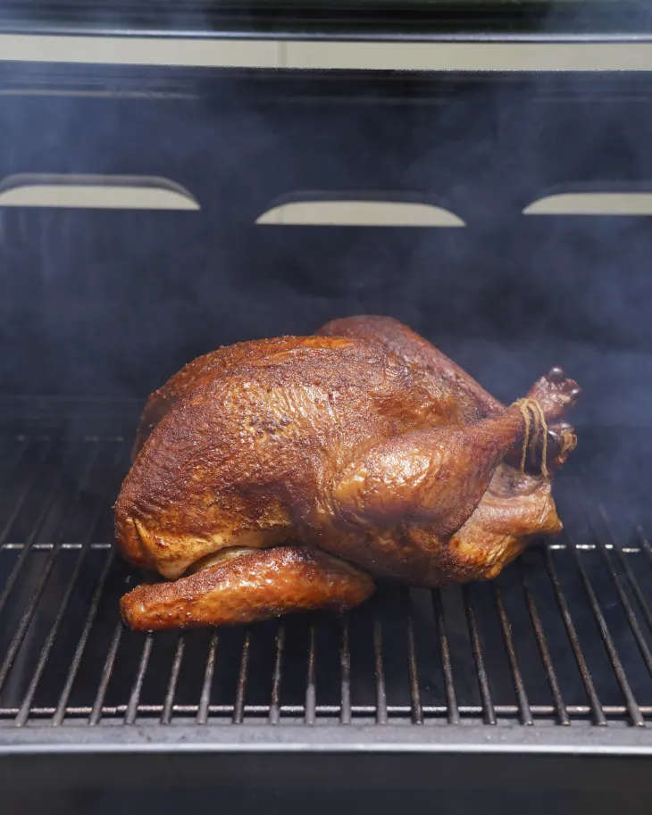

Smoked and Dry-Brined Turkey

Ingredients
- 1 (10- to 12-pound) whole turkey, thawed if frozen
- 2 tablespoons packed light or dark brown sugar
- 1 tablespoon garlic powder
- 1 tablespoon onion powder
- 2 teaspoons dried ground mustard
- 1 teaspoon dried rubbed sage
- 1 teaspoon smoked paprika
- 1/2 teaspoon cayenne pepper or chipotle chili powder
- 2 tablespoons canola oil
- 2 tablespoons kosher salt
- 1 large apple, such as Gala
- 1 small yellow onion or white onion
- 4 sprigs fresh thyme
- 4 sprigs fresh sage
- 5 ounces hickory or applewood smoking chips or pellets (2 cups)
How to prepare
- If your 10 to 12 pound turkey is frozen, thaw it for several days in the refrigerator, or use a cold water bath to thaw the turkey more quickly. Here’s a guide to safely thawing a turkey.
- At least 12 hours or up to 24 hours before you plan to smoke your turkey, dry brine and rub the turkey: Place 2 tablespoons packed brown sugar, 1 tablespoon garlic powder, 1 tablespoon onion powder, 2 teaspoons dried ground mustard, 1 teaspoon dried rubbed sage, 1 teaspoon smoked paprika, and 1/2 teaspoon cayenne pepper or chipotle chili powder in a small bowl and stir to combine.
- Unwrap the turkey and remove the neck bones and giblets from the neck and body cavity. Drain off any liquid in the cavity, then pat the turkey dry with paper towels. Place the turkey on a baking sheet or disposable roasting pan.
- Season the turkey inside and out with 2 tablespoons kosher salt, making sure to season between the legs and breast. Coat the outside of the turkey with 2 tablespoon of canola oil. Season the turkey all over, including the cavity, with the spice rub. Loosely cover with plastic wrap. Refrigerate for at least 12 or up to 24 hours.
- Uncover the turkey and let sit at room temperature for 1 hour before you smoke it. Meanwhile, cut 1 apple in half and peel and halve 1 small yellow or white onion. Place both, along with 4 fresh thyme sprigs and 4 fresh sage sprigs, inside the turkey’s cavity. Soak 5 ounces hickory or apple wood chips (2 cups) in water.
- Drain the wood chips. If your gas grill does not have a smoker box, place the chips in small aluminum foil tray. Cover the tray tightly with aluminum foil, then poke 8 holes in the foil with a knife to allow smoke to escape. Remove the cooking grate on one side of the grill, and place the tray directly on the heat plate (the triangular pieces). Replace the cooking grate. Light all of the burners, close the lid, and heat over medium heat until the wood chips are fragrant start to smoke, 10 to 15 minutes. Open the lid, reduce the outside burners to low, and turn off the center burner(s). Place the turkey over the unlit burners. Adjust the heat as needed to maintain a temperature of 225 to 275F.
- Close the grill and smoke the turkey for 5 to 6 hours. Every hour, check that the smoker temperature is around 250F and rotate the turkey a quarter turn, if possible, to ensure the turkey is smoked evenly. The turkey is ready when the skin is amber and an instant-read thermometer inserted into the thickest part of the thigh (not touching the bone) registers at least 165F.
- Remove the turkey from the smoker and rest for 15 minutes before carving. For full carving instructions, visit this helpful step-by-step guide.
Storage
**Leftovers can be refrigerated in an airtight container for up to 4 days.**
Back to Home Page